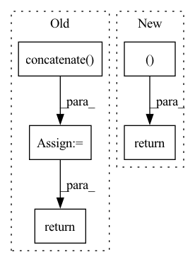

Pattern ID :2717

Before Change
output = self.model.predict_on_batch(inputs)
logit.append(output)
logit = np.concatenate(logit, axis=0)
reordered_logit = np.zeros_like(logit)
reordered_logit[orders] = logit
return reordered_logit
def train_sequence(self, index):
index = self._check_and_convert(index)
After Change
batch_data = tuple(zip(batch_features, batch_adj, batch_mask))
logit = np.zeros((index.size, self.n_classes), dtype="float32")
with self.device:
batch_data = self._to_tensor(batch_data)
for order, inputs in zip(orders, batch_data):
output = self.model.predict_on_batch(inputs)
logit[order] = output
return logit
def train_sequence(self, index):
In pattern: SUPERPATTERN
Frequency: 4
Non-data size: 5
Instances
Fragment ID: 10916230
Project Name: edisonleeeee/graphgallery
Commit Name: 6d453bba5f625a27587472fe0496f5456b8a767b
Time: 2020-03-15
Author: cnljt@outlook.com
File Name: nn/models/clustergcn.py
M Class Name: ClusterGCN
N Class Name: ClusterGCN
M Method Name: predict(2)
N Method Name: predict(2)
M Parent Class: SupervisedModel
N Parent Class: SupervisedModel
M File Name: nn/models/clustergcn.py
N File Name: nn/models/clustergcn.py
M Start Line: 77
M End Line: 99
N Start Line: 77
N End Line: 102
'>
Before Change
def compute_alphas(self):
// Construct matrix for alpha calculation
objPts_w = np.array(self.objPts).transpose()[0]
mat_objPts_w = np.concatenate((objPts_w, np.array([np.ones((self.n))])), axis=0)
contPts_w = self.contPts_w.transpose()
mat_contPts_w = np.concatenate((contPts_w, np.array([np.ones((4))])), axis=0)
// Calculate Alpha
Alpha = np.matmul(np.linalg.inv(mat_contPts_w), mat_objPts_w) // simple method
Alpha = Alpha.transpose()
// Alpha = solve(mat_contPts_w, mat_objPts_w) // General method
// Alpha = Alpha.transpose()
return Alpha
def compute_L6_10_mat_mat(self, V_M):
L = np.zeros((6, 10))
After Change
else:
alpha = torch.linalg.solve(contPts_w, objPts, left=False) // General method
return alpha
def compute_L6_10_mat_mat(self, V_M):
L = np.zeros((6, 10))
'>
Fragment ID: 10916229
Project Name: pypose/pypose
Commit Name: f6e65aa4066f56f1715c9ddfd89f5307c1ebe043
Time: 2023-02-24
Author: ztzhan1108@gmail.com
File Name: pypose/module/pnp.py
M Class Name: EPnP
N Class Name: EPnP
M Method Name: compute_alphas(4)
N Method Name: compute_alphas(1)
M Parent Class:
N Parent Class:
M File Name: pypose/module/pnp.py
N File Name: pypose/module/pnp.py
M Start Line: 127
M End Line: 140
N Start Line: 131
N End Line: 158
'>
Before Change
df = self._load_dyna()
// 预测用的过去时间窗口长度 取决于self.config["input_window"]
x_offsets = np.sort(np.concatenate((np.arange(-self.config["input_window"]+1, 1, 1),)))
// 未来时间窗口长度 取决于self.config["output_window"]
y_offsets = np.sort(np.arange(1, self.config["output_window"]+1, 1))
// x: (num_samples, input_length, num_nodes, input_dim)
// y: (num_samples, output_length, num_nodes, output_dim)
x, y = self._generate_graph_seq2seq_io_data(df, x_offsets, y_offsets)
self._logger.info("Dataset created")
self._logger.info("x shape: " + str(x.shape) + ", y shape: " + str(y.shape))
train_rate, eval_rate = self.config["train_rate"], self.config["eval_rate"]
test_rate = 1 - train_rate - eval_rate
num_samples = x.shape[0]
num_test = round(num_samples * test_rate)
num_train = round(num_samples * train_rate)
num_val = num_samples - num_test - num_train
// train
x_train, y_train = x[:num_train], y[:num_train]
// val
x_val, y_val = x[num_train: num_train + num_val], y[num_train: num_train + num_val]
// test
x_test, y_test = x[-num_test:], y[-num_test:]
if self.config["cache_dataset"]:
ensure_dir(self.cache_file_folder)
self._logger.info("train\t" + "x: " + str(x_train.shape) + "y: " + str(y_train.shape))
self._logger.info("eval\t" + "x: " + str(x_val.shape) + "y: " + str(y_val.shape))
self._logger.info("test\t" + "x: " + str(x_test.shape) + "y: " + str(y_test.shape))
np.savez_compressed(
self.cache_file_name,
x_train=x_train,
y_train=y_train,
x_test=x_test,
y_test=y_test,
x_val=x_val,
y_val=y_val,
x_offsets=x_offsets.reshape(list(x_offsets.shape) + [1]),
y_offsets=y_offsets.reshape(list(y_offsets.shape) + [1]),
)
self._logger.info("Saved at " + self.cache_file_name)
return x_train, y_train, x_val, y_val, x_test, y_test, x_offsets, y_offsets
def _load_cache_train_val_test(self):
self._logger.info("Loading " + self.cache_file_name)
After Change
y_val=y_val,
)
self._logger.info("Saved at " + self.cache_file_name)
return x_train, y_train, x_val, y_val, x_test, y_test
def _load_cache_train_val_test(self):
self._logger.info("Loading " + self.cache_file_name)
cat_data = np.load(self.cache_file_name)
'>
Fragment ID: 10916238
Project Name: libcity/bigscity-libcity
Commit Name: b9837d163daf079f628c18177c55ffbb9dac504b
Time: 2021-01-30
Author: 35984903+aptx1231@users.noreply.github.com
File Name: trafficdl/data/dataset/traffic_speed_dataset.py
M Class Name: TrafficSpeedDataset
N Class Name: TrafficSpeedDataset
M Method Name: _generate_train_val_test(1)
N Method Name: _generate_train_val_test(1)
M Parent Class: AbstractDataset
N Parent Class: AbstractDataset
M File Name: trafficdl/data/dataset/traffic_speed_dataset.py
N File Name: trafficdl/data/dataset/traffic_speed_dataset.py
M Start Line: 125
M End Line: 165
N Start Line: 148
N End Line: 176
'>
Before Change
all_embeddings = np.array(all_embeddings)
all_ids = np.array(all_ids).reshape((-1, 1))
final_embeddings = np.concatenate((all_ids, all_embeddings), axis=1)
return final_embeddings
After Change
print(f"Embedded {i_sentence} with {num_errors} errors")
return final_embeddings, retrieved_indices
'>
Fragment ID: 10916234
Project Name: bluebrain/search
Commit Name: cc7283c8f8440aeec4d04d6b259ab898c78a3cc1
Time: 2020-07-29
Author: jankrepl@yahoo.com
File Name: src/bbsearch/embedding_models.py
M Class Name: AnonimousClass
N Class Name: AnonimousClass
M Method Name: compute_database_embeddings(3)
N Method Name: compute_database_embeddings(2)
M Parent Class:
N Parent Class:
M File Name: src/bbsearch/embedding_models.py
N File Name: src/bbsearch/embedding_models.py
M Start Line: 283
M End Line: 317
N Start Line: 266
N End Line: 321